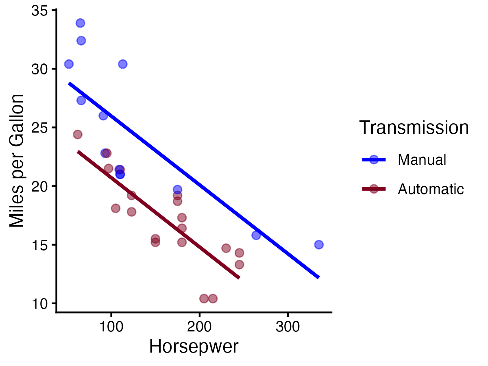

3 Multiple Regression
3.1 1. Control for other variables
##
## Call:
## lm(formula = hp ~ mpg + wt, data = dat)
##
## Residuals:
## Min 1Q Median 3Q Max
## -59.42 -30.75 -12.07 24.82 141.84
##
## Coefficients:
## Estimate Std. Error t value Pr(>|t|)
## (Intercept) 349.287 103.509 3.374 0.00212 **
## mpg -9.417 2.676 -3.519 0.00145 **
## wt -4.168 16.485 -0.253 0.80217
## ---
## Signif. codes: 0 '***' 0.001 '**' 0.01 '*' 0.05 '.' 0.1 ' ' 1
##
## Residual standard error: 44.65 on 29 degrees of freedom
## Multiple R-squared: 0.6033, Adjusted R-squared: 0.576
## F-statistic: 22.05 on 2 and 29 DF, p-value: 0.000001505##
## Call:
## lm(formula = hp ~ wt, data = dat)
##
## Residuals:
## Min 1Q Median 3Q Max
## -83.430 -33.596 -13.587 7.913 172.030
##
## Coefficients:
## Estimate Std. Error t value Pr(>|t|)
## (Intercept) -1.821 32.325 -0.056 0.955
## wt 46.160 9.625 4.796 0.0000415 ***
## ---
## Signif. codes: 0 '***' 0.001 '**' 0.01 '*' 0.05 '.' 0.1 ' ' 1
##
## Residual standard error: 52.44 on 30 degrees of freedom
## Multiple R-squared: 0.4339, Adjusted R-squared: 0.4151
## F-statistic: 23 on 1 and 30 DF, p-value: 0.000041463.2 2. Investigate the influence of moderators
##
## Call:
## lm(formula = hp ~ mpg + am, data = dat)
##
## Residuals:
## Min 1Q Median 3Q Max
## -54.84 -29.02 -5.98 33.53 102.96
##
## Coefficients:
## Estimate Std. Error t value Pr(>|t|)
## (Intercept) 352.312 27.226 12.940 0.000000000000142 ***
## mpg -11.200 1.494 -7.495 0.000000029203748 ***
## am 47.725 18.048 2.644 0.0131 *
## ---
## Signif. codes: 0 '***' 0.001 '**' 0.01 '*' 0.05 '.' 0.1 ' ' 1
##
## Residual standard error: 40.12 on 29 degrees of freedom
## Multiple R-squared: 0.6797, Adjusted R-squared: 0.6576
## F-statistic: 30.77 on 2 and 29 DF, p-value: 0.00000006778##
## Call:
## lm(formula = hp ~ mpg * am, data = dat)
##
## Residuals:
## Min 1Q Median 3Q Max
## -53.872 -29.551 -6.168 34.351 105.639
##
## Coefficients:
## Estimate Std. Error t value Pr(>|t|)
## (Intercept) 360.7425 44.0025 8.198 0.00000000635 ***
## mpg -11.6916 2.5074 -4.663 0.00006971654 ***
## am 32.3404 65.0637 0.497 0.623
## mpg:am 0.7768 3.1517 0.246 0.807
## ---
## Signif. codes: 0 '***' 0.001 '**' 0.01 '*' 0.05 '.' 0.1 ' ' 1
##
## Residual standard error: 40.79 on 28 degrees of freedom
## Multiple R-squared: 0.6804, Adjusted R-squared: 0.6461
## F-statistic: 19.87 on 3 and 28 DF, p-value: 0.0000004217A picture’s worth 1000 words
## 'data.frame': 32 obs. of 11 variables:
## $ mpg : num 21 21 22.8 21.4 18.7 18.1 14.3 24.4 22.8 19.2 ...
## $ cyl : num 6 6 4 6 8 6 8 4 4 6 ...
## $ disp: num 160 160 108 258 360 ...
## $ hp : num 110 110 93 110 175 105 245 62 95 123 ...
## $ drat: num 3.9 3.9 3.85 3.08 3.15 2.76 3.21 3.69 3.92 3.92 ...
## $ wt : num 2.62 2.88 2.32 3.21 3.44 ...
## $ qsec: num 16.5 17 18.6 19.4 17 ...
## $ vs : num 0 0 1 1 0 1 0 1 1 1 ...
## $ am : num 1 1 1 0 0 0 0 0 0 0 ...
## $ gear: num 4 4 4 3 3 3 3 4 4 4 ...
## $ carb: num 4 4 1 1 2 1 4 2 2 4 ...# Recode am to a factor
dat$new_am <- factor(dat$am, levels = c(0,1),
labels = c("Automatic", "Manual"))b <- dat %>%
ggplot(aes(x = mpg, y = hp, colour = new_am, group = new_am)) +
geom_point(size = 2, alpha = 0.5) +
geom_smooth(method = "lm", se = FALSE) +
scale_colour_manual(values = c("blue", "#800020")) +
theme_classic() +
labs(
x = "Miles per Gallon",
y = "Horsepwer",
colour = "Transmission",
group = "Transmission"
)
ggsave("chart_2.png", b, height = 3, width = 4, dpi = 300)## `geom_smooth()` using formula = 'y ~ x'